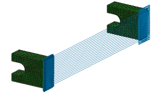

With Automatic Coupling:
The software pairs the nodes on the independent side of the model with nodes on the dependent side of the model.
The software searches for nodes based on the translation from a designated independent node to a designated dependent node using the search tolerance.
Optionally, the software modifies the displacement coordinate system of all the nodes that participate in the coupling to use the designated coordinate system.
You specify the directions and rotations in which the software couples the nodes.
For a given node pair, the degrees of freedom of the first node becomes the independent and the second becomes the dependent.
